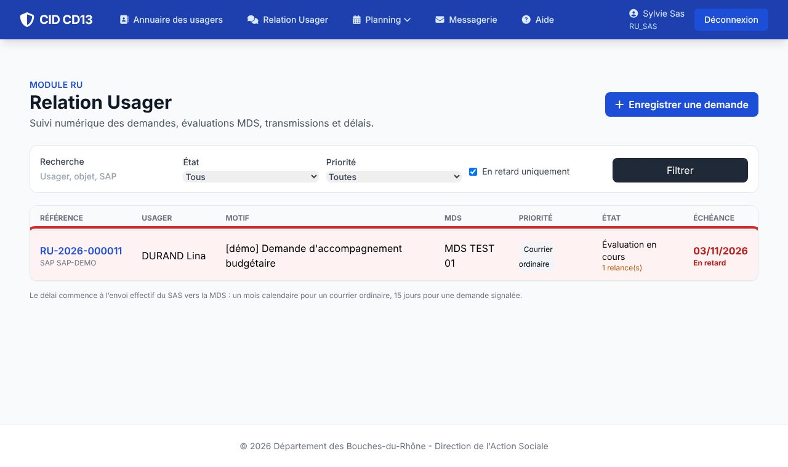
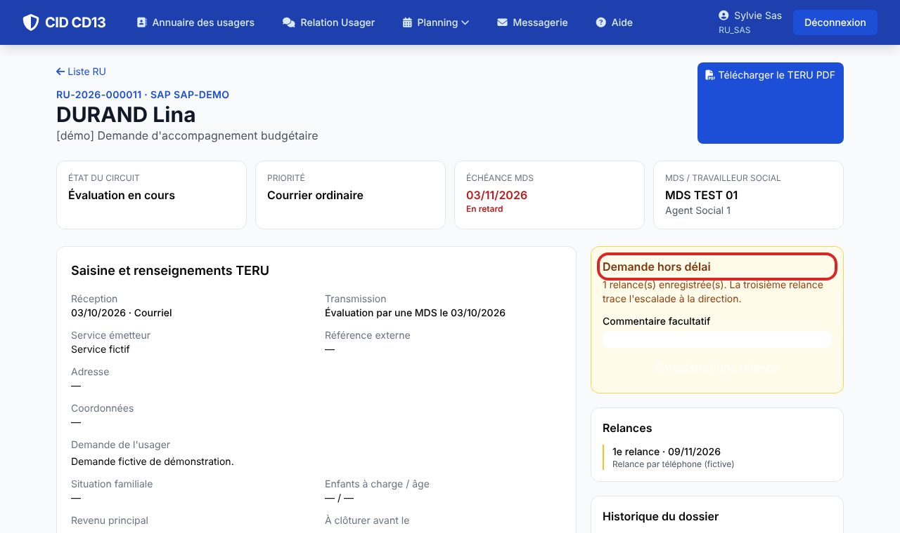
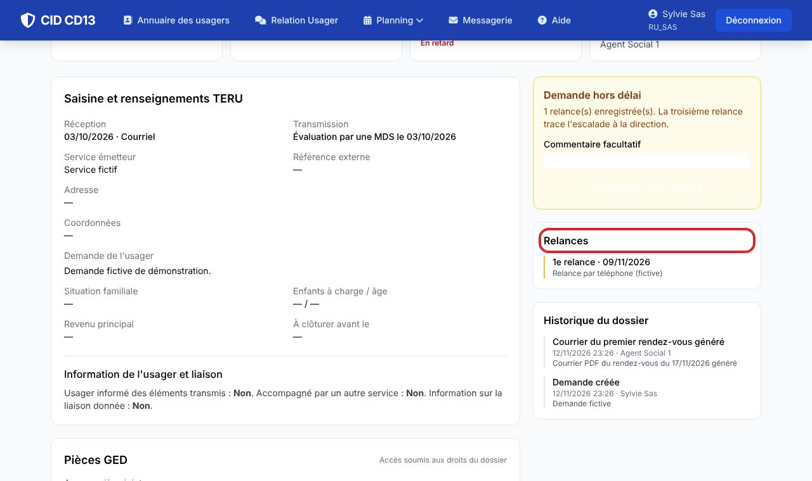

Avant de commencer
- Délai : un mois calendaire pour un courrier ordinaire, 15 jours calendaires pour une demande signalée. Les week-ends et jours fériés ne sont pas retirés.
1Repérer les demandes en retard

- Cochez En retard uniquement dans la liste, puis cliquez sur Filtrer.
- La ligne est rouge et la date d'échéance est marquée « En retard ».
2Enregistrer une relance

- Dans la section Demande hors délai, ajoutez un commentaire facultatif puis cliquez sur Enregistrer une relance.
- Une seule relance par jour est possible.
3L'escalade à la troisième relance

- À la troisième relance, CID envoie un message interne au responsable de la MDS, ou à défaut à un cadre habilité, et le note dans l'historique.
- Si aucun cadre habilité n'est trouvé, l'historique le signale : prévenez alors la direction.
CID n'envoie aucun rappel automatique : c'est le SAS qui relance.
Bon à savoir
- Une demande clôturée ne peut plus être relancée.
Et ensuite ?
Cliquez sur une image pour l'agrandir. Le cadre rouge montre où cliquer ou quoi remplir. Toutes les données affichées sont fictives.